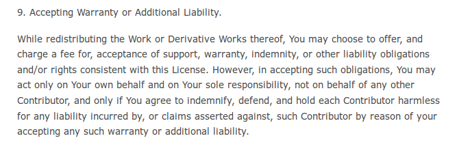

感謝您對「自由軟體鑄造場」的支持與愛護，十多年來「自由軟體鑄造場」受中央研究院支持，並在資訊科學研究所以及資訊科技創新研究中心執行，現已完成階段性的任務。 本網站預計持續維運至 2021年底，網站內容基本上不會再更動。
也紀念我們永遠的朋友 李士傑先生（Shih-Chieh Ilya Li）。
也紀念我們永遠的朋友 李士傑先生（Shih-Chieh Ilya Li）。
Legal Column  自由開源軟體預設的不附隨保證與擔保特性
自由開源軟體預設的不附隨保證與擔保特性
Open Source Software license
 We provide Open Source Software license and legal materials via this page.
We provide Open Source Software license and legal materials via this page.
自由開源軟體預設的不附隨保證與擔保特性
Created at Tuesday, 24 December 2013 13:42 Last Updated on Tuesday, 07 January 2014 10:59
自由開源軟體在散布的過程中，並不收取使用上限定時間、範圍，與對象的授權金（註一），而雖然非授權金性質的其他收費名目是可以要求的，但在大部分的狀況下ー例如透過公開的網路空間平台提供下載，也不會收取其他費用，也就是原則上，自由開源軟體的授權人並不會因為散布自由開源軟體獲得任何的金錢利益，因此相對地，這些授權人並不承諾自由開源軟體的功能一定完美無缺、不會造成使用者有任何損失。這種不附隨保證或擔保承諾，是自由開源軟體的一大特性。不過，這樣的特性，並不等於自由開源軟體的授權人或使用者，可以免除遵守各國法律的強制規定與禁止規定，因此，當授權人或使用者違反法律的強制規定與禁止規定時，還是一樣必須依照法律的要求來負擔一定的責任。本文以下將會針對自由開源軟體這種不附隨保證與擔保的特性加以說明，同時也將舉例說明違反強制、禁止規定的狀況，以協助讀者更進一步了解自由開源軟體的授權特性。
【基於衡平原則的不附隨保證與擔保條款】
▲ 圖1：Apache-2.0 在第 7、8 條中規定不附隨保證與擔保條款。
不附隨保證與擔保條款，通常存在於自由開源授權條款的最末部份，並且常會被冠以類似 "NO WARRANTY"、"DISCLAIMER OF LIABILITY"、"Disclaimer of Warranty" 或 "Limitation of Liability" 等文字的標題。這些條款的內容主要分為兩部份：一部份是宣示授權人僅就軟體現況的基礎 ("on an 'AS IS' BASIS") 來提供使用者利用，且不保證軟體具有特定的品質或功能；另一部份則是表達，授權人並不擔保使用者利用軟體時不會產生任何的金錢或其他實質損失。依據前者的宣示，若是一個自由開源軟體本身具有功能上或結構上的瑕疵，導致使用者無法順暢地利用該軟體，這時候使用者無法強制要求授權人必須修復軟體中的瑕疵，或者重新給予一個可以執行無誤的版本；而根據後者所表達的意思，若因為利用自由開源軟體而導致使用者電腦中的工作資料毀損，使用者必須支出額外的金錢來救回資料，或因此必須賠償工作客戶金錢損失，這些金錢支出與損害都將由使用者自己來承擔，自由開源軟體授權人不會賠償使用軟體而導致的損害。
而自由開源軟體之所以會有這樣的特性，如本文一開始所提到的，是因為自由開源軟體的權利人並沒有透過散布軟體來獲得實際的金錢利益，相對地，授權人才會透過上述這類的免責條款，來明白表述其並不確保軟體具有一定的品質，以及不會擔保使用者受到實質損失的可能性。因此自由開源軟體這種預設不附隨保證或擔保的特性，其實是一種衡平原則的實踐，既然沒有金錢收益，授權人因此就不會針對軟體給予使用者相應保證或擔保的承諾（註二）。
【後手使用者仍然可以收費方式來自行提供保證或擔保】
不過既然不附隨保證與擔保是一種衡平原則的實踐，那麼若是有收受此自由開源軟體的後手使用者，或者原來的專案開發者，願意花費額外的時間與金錢來確保自由開源軟體使用上的品質，其當然可以在散布自由開源軟體時，以收取費用的方式，來提供取得軟體的更後手使用者一定程度的保證或擔保，以衡平其為了提供保證或擔保所付出的心力。例如：甲公司以自由開源軟體為基礎來替乙企業客製化內部管理系統，而在客製化的過程中，甲公司修補了此自由開源軟體專案的若干瑕疵，同時配合整套內部管理系統來優化軟體的執行速度，這時候甲公司可以先就其優化加值行為，來向乙企業索取承攬性質的服務費用，而為了確保其客製化出來的版本有著一定的穩定度，若乙公司也願意，甲公司便可向乙企業收取後續系統維護上的擔保費用，未來乙企業在利用這套內部管理系統時，若發生當機或者異常狀況，甲公司便須依約維修到正常為止，此外，若是契約中有額外述明，因為此客製化版本的使用，而導致乙企業儲存在系統中的資料流失，甲公司在一定條件下，也必須依約賠償相關的損失。
針對這樣的運用方式，GPL-2.0、GPL-3.0、Apache-2.0、MPL-2.0 與 EPL-1.0 等授權條款，均有明確的文字，表示使用者可以透過收取費用的方式來提供額外的保證或擔保（註三）。而這種保證或擔保費用的收取，更是自由開源軟體的客製化承包商，得以生財牟利的彈性化商業應用模式。
值得注意的是，此類保證或擔保的承諾，是由特定使用者所自行提供，因此未來若是保證或擔保事由真的發生的話，也必須由這位特定的使用者自己來承擔保證或擔保責任，原自由開源軟體的授權人或其他的使用者，並不會連帶被課予這樣的保證或擔保責任。在一些授權條款中，有著明確的文字來闡明這樣的原則。所以若是因為某特定使用者額外提供的保證或擔保承諾，而使得授權人或其他使用者遭致損失或必須負擔額外責任的話，這位特定的使用者就必須協助授權人或其他使用者，來免於負擔這些額外的責任，而在授權人或其他使用者因此受有損失的情況下，這位特定使用者還必須要加以賠償這些無辜受殃者所遭遇的損失。

▲ 圖2：Apache-2.0 在第 9 條中規定使用者不可以代表授權人或其他使用者提供保證或擔保承諾。
【不附隨保證與擔保條款無法超越法律的強制與禁止規定】
不過自由開源軟體這項不附隨保證與擔保的義務，並無法凌駕於法律規定之上，若遇到各國法律有強制或禁止規定，授權人或使用者必須負擔特定義務的時候，這時候授權人或使用者還是必須依照法律的規劃來承擔應負的責任。
以我國民法關於出賣人的規定為例，凡是商品出賣人均負有瑕疵擔保責任，簡單來說，就是商品出賣人必須擔保所販售的商品具有所宣稱的功能，若是商品的功能沒有達到所宣稱的程度，對於購買者來說，這就是一個有瑕疵的商品，購買者可以向出賣人提出退貨、減價或換貨的要求。因此若販售者丙宣稱其商品具有某特定功能，當消費者丁將商品購買回去後，發現廣告上所宣稱的某特定功能無法運作時，丁可以要求丙更換另外一個運作正常的商品，若丙因為執行該特定功能的是自由開源軟體元件，而對消費者表示不保證商品品質，同時拒絕更換商品的話，那麼丙就違反了民法對於出賣人課予的強制規定，消費者丁可以據此來控告商品的販售者丙（註四）。
另外，我國刑法自民國 92 年起，在第 36 章中規定有妨害電腦使用相關的刑事罪責，其中開發電腦病毒或木馬程式，進而導致他人產生損害，是被法律明文禁止的不法行為，開發者一旦違反，可能必須面對刑事責任。因此若開發者戊將木馬程式寫入自由開源軟體中，讓使用者己安裝、執行這個自由開源軟體的同時，會連帶植入木馬程式到其作業系統中，導致線上遊戲的帳號密碼因而外洩，導致己花費金錢所購買的網路虛擬寶物或貨幣被盜，使用者己將可以依據刑法第 36 章的相關規定，針對戊這種不法行為，向檢察官與司法警察官提出刑事告訴。此時，戊也並無法引用自由開源軟體不附隨保證與擔保的規定，來加以免除其所必須負擔的刑事責任（註五）。
【結語】
從本文的說明可以了解到，自由開源軟體這項不附隨保證與擔保的特性並非是絕對值，其是否完整生效，仍然要看個案的發展與具體的法律關係來定。首先，在商業行為裡，使用者可以透過收費來自行提高保證或擔保的承諾；其次，這項特性也無法用來免除授權人或使用者，在法律上必須遵守強制規定與禁止規定的義務。
----
註一：這邊主要是指不收取著作權授權金，不過，許多新近草擬的自由開源授權條款，例如：MPL-1.1、MPL-2.0、EPL-1.0、Apache-2.0、GPL-3.0等，也將軟體專利納入到授權範圍中，因此對於這些條款來說，所謂的不收取授權金也包括了不收取軟體專利的授權金在內。
註二：關於進一步說明無償免責特性在法律上的意義，請參閱：林誠夏，授權條款中免責聲明的法律意義，https://www.openfoundry.org/tw/legal-column-list/518-2010-07-15-10-50-58。
註三：這些條款的規定分別在：GPL-2.0 第 1 條第 2 項、GPL-3.0 第 4 條第 2 項、Apache-2.0 第 9 條、MPL-2.0 第 3.5 條與 EPL-1.0 第 4 條。
註四：相關規定在我國民法第 354、364 條中。
民法第 354 條：
「物之出賣人對於買受人，應擔保其物依第三百七十三條之規定危險移轉於買受人時無滅失或減少其價值之瑕疵，亦無滅失或減少其通常效用或契約預定效用之瑕疵。但減少之程度，無關重要者，不得視為瑕疵。
出賣人並應擔保其物於危險移轉時，具有其所保證之品質。」
第 364 條：
「買賣之物，僅指定種類者，如其物有瑕疵，買受人得不解除契約或請求減少價金，而即時請求另行交付無瑕疵之物。」
註五：相關規定在我國刑法第 368、369、362 條中。
第 358 條：
「無故輸入他人帳號密碼、破解使用電腦之保護措施或利用電腦系統之漏洞，而入侵他人之電腦或其相關設備者，處三年以下有期徒刑、拘役或科或併科十萬元以下罰金。」
第 359 條：
「無故取得、刪除或變更他人電腦或其相關設備之電磁紀錄，致生損害於公眾或他人者，處五年以下有期徒刑、拘役或科或併科二十萬元以下罰金。」
第 362 條：
「製作專供犯本章之罪之電腦程式，而供自己或他人犯本章之罪，致生損害於公眾或他人者，處五年以下有期徒刑、拘役或科或併科二十萬元以下罰金。」
OSSF Newsletter : 第 233 期 自由開源軟體預設的不附隨保證與擔保特性
Tags: warranty, liability, no warranty, limitation of liability, GPL-2.0, GPL-3.0, Apache-2.0, MPL-2.0, EPL-1.0, 擔保, 保證,
Category: Legal Column
Open Source Software Foundry‧ Best Viewed with IE7.0 or Firefox2.0 above, 1024x768 Resolution. E-Mail：contact@openfoundry.org
Address：No.128, Sec.2, Academia Rd., Institute of Information Science, Academia Sinica, Nangang District, Taipei City 11529, Taiwan (R.O.C).
Privacy Policy. Terms-of-use
Address：No.128, Sec.2, Academia Rd., Institute of Information Science, Academia Sinica, Nangang District, Taipei City 11529, Taiwan (R.O.C).
Privacy Policy. Terms-of-use